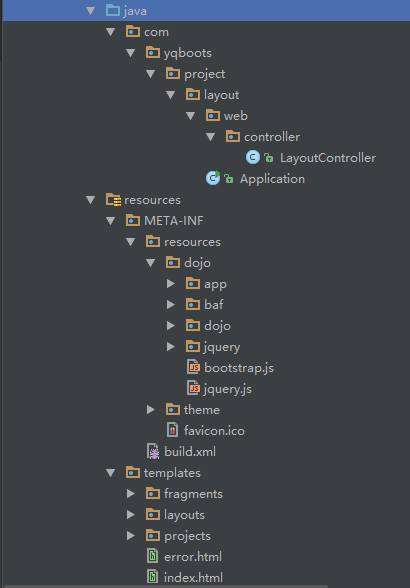
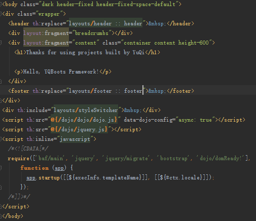
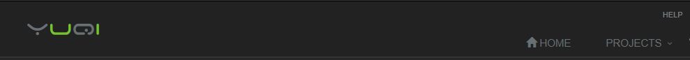
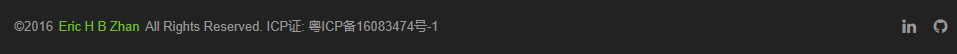
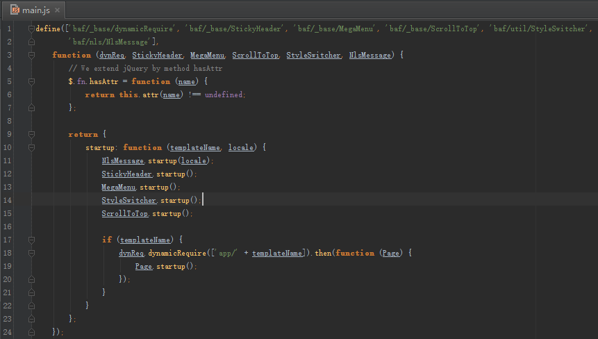
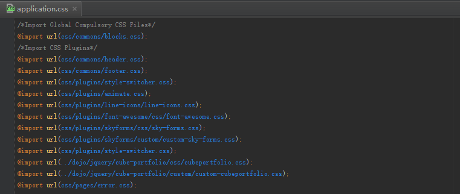

Project Layout defines the common layout template and all the files that support the YQBoots Framework.

After you run spring-boot:run with profile "test" for the "project-layout" sub-module,
you will have the application running at http://localhost:8080 too!
That's the most fantastic part of the YQBoots Framework -- most of the modules can be launched standalone, there is less dependencies between them while developing or testing for different modules.
resources/templates -- The location for all the HTML pages, and which is the default location
for Thymeleafresources/META-INF/resources -- The location for all the JavaScript and CSS files.It is a top-content-bottom layout currently, which makes the content area much larger to display contents.
The page entrance is templates/layouts/layout.html, it's a Thymeleaf template.

Page head contains logo, top bar and menu bar.

Page footer contains copy right and social links.

The script entrance is /META-INF/resources/dojo/baf/main.js, all JavaScripts are organised by dojo,
whose file structure is similar to Java package.

All the application related JavaScript files are located at /dojo/app/. For instance, the home page
/templates/index.html is bootstrapped by /dojo/app/index.js.
The script entrance is /META-INF/resources/theme/application.css.
